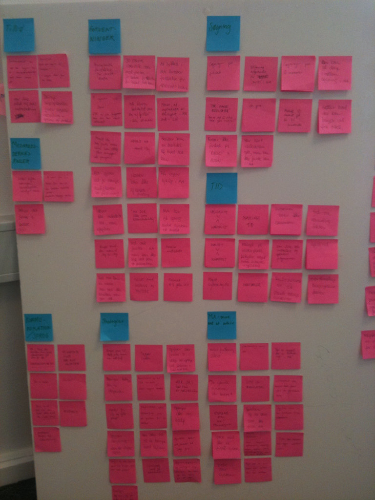
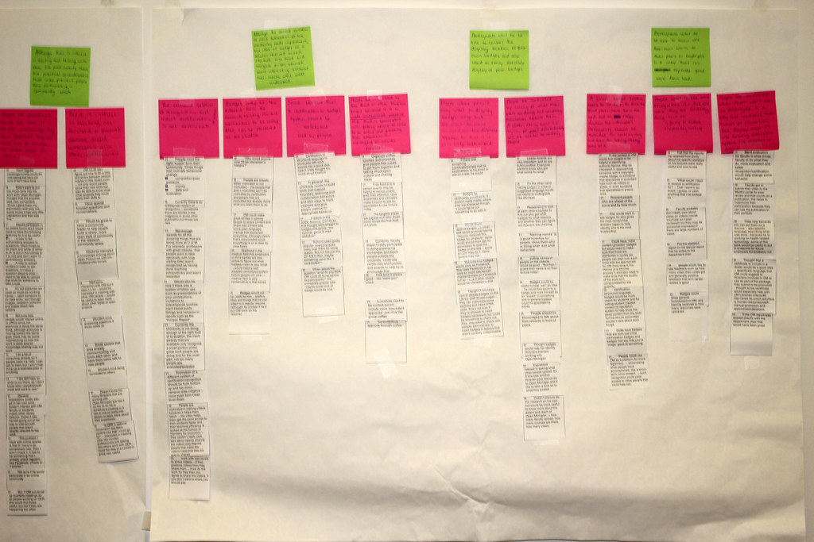

Affinity map
About
An affinity map organizes raw qualitative data — interview quotes, field observations, usability notes, or brainstorm outputs — into emergent thematic clusters. Researchers write individual data points on sticky notes (physical or digital) and then collaboratively sort them into groups based on natural similarities. Cluster labels, written last, describe the theme rather than imposing it in advance. The method surfaces patterns that weren't anticipated before the research — which is precisely its value. What you find is what the data contains, not what you went looking for.
When to use
Use an affinity map immediately after a round of qualitative research — interviews, diary studies, contextual inquiry, or usability sessions — when you have too many individual observations to hold in your head simultaneously. It is most valuable when working as a team, as the act of sorting together builds shared understanding that reading a report never achieves. It's also appropriate during brainstorming sessions to organize a large volume of generated ideas before evaluation.
When not to use
Affinity mapping is not suited to quantitative data — it cannot tell you how many people share a view, only that a view exists. Do not use it as a substitute for statistical analysis when your research question requires numerical answers. It also loses value if the sorting is done by one person alone and never discussed with others; the collaborative conversation is as important as the output.
References
Examples
Click any example to view full size and visit the original source.



